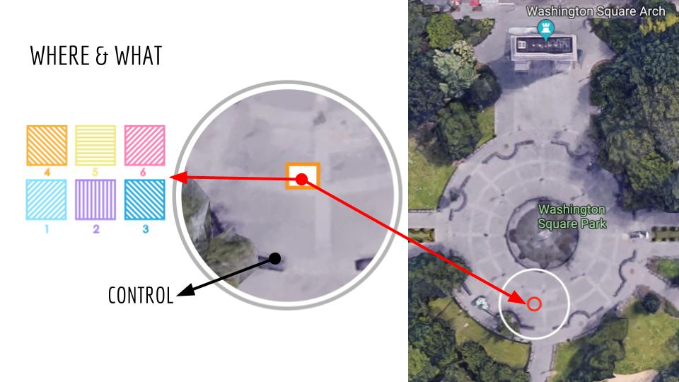

Working in teams, deploy an intervention for a space that enables strangers to interact.
1. Your intervention may not include written or spoken language.
2. Your intervention may be of any type, scale, or media.
3.Your intervention should be site specific.
We picked Washinton Square as a public space and we forcused on the area starting from the arch to the fountain
done by Rian Ishikawa, Jimin Chung, and Qinglin Wang
1. History:
Washington Square Park is named for George Washington (1732-1799), the commander of the Continental Army, who was inaugurated in New York City as the first President of the United States on April 30, 1789.
Used first as the Washington Military Parade Ground in 1826, the site became a public park in 1827.
the square was redesigned and improved by M.A. Kellogg, Engineer-in-Chief, and I.A. Pilat, Chief Landscape Gardener in 1870
providing a more rustic and informal space with curvilinear paths along its periphery, retaining many of the diagonal paths within the park’s core, and defining plots of grass with shade trees and carriage drive through the park's interior connecting Fifth Avenue to Lower Manhattan. Washington Arch, designed by noted architect Stanford White, was built between 1890-1892 and replaced a wooden arch erected in 1889 to honor the centennial of the first president’s inauguration.
Washington Square Park was redefined socially and culturally throughout the 20th century.
The late 1960s and early 1970s saw the lowering of the fountain and creation of a two-tiered central plaza which cemented its reputation as an ad hoc performance space.
In the 1990s both playgrounds were upgraded, petanque courts built at a "teen plaza" in the southeast park precinct, and a dog run was introduced.
The second phase (2012) provided a small dog run, a new chess plaza, a performance stage, renovated petanque courts, as well as enhanced landscaping, lighting and pathways, and the relocation and conservation of the statue of Garibaldi. The third and final phase, completed in 2014, features BKSK Architects' new LEED-certified park house and comfort station, whose subtle curvature, reclaimed wood, stone palette and low profile integrate with the lush surroundings.
2. Facility:
Bathroom
Dog-friendly area
Two eateries : NY Dosas and Otto Enoteca Pizzeria Gelato Cart
Playground: 4 types for different age
Spry shower
Wifi hotspot
4. Type of people visiting:
dynamic commons for local residents, chess players, students, performers and tourists from around the globe.
5. Local businesses, residents surrounding the area:
Grey Art Gallery
New York University
NYU School of Law
NYU Faculty of Arts and Sciences
Elmer Holmes Bobst Library
Skirball Center for the Performing Arts
Judson Memorial Church
Blue Note Jazz Club
Silver School of Social Work
Washington Square
Lipton Hall
6. Location
Located at the foot of Fifth Avenue in downtown Manhattan. Surrounded by NYU buildings.
6. Cultural importance
Washington Square has long been a hub for politics and culture in New York City. A lot of protests and demonstrations took place at Washington Square Park. It is often chosen to be the setting of novels, TV shows, and films.
Weather : Lightly rain, cold, dark
Artist (and number of people looking at it): Non but there was a person going around asking if he could sing for them
Food : non
People sitting at the fountain : Just few only one of them stated long time, he was facing inside the fountain and just drinking out of his water bottle
Rough count on passerbys : There was so many people rushing by to get to next destination. There were also people walking the dog. Only people who was staying for was tourist getting photos.
Types of group of people (alone or in groups): Family (tourist), people are mainly in smaller group quickly getting by.
Stuff on the floor : There was a cup of coffee on the stone of the fountain but other than that park was very clean.
Weather : Sunny, windy (1:00pm)
Artist An installation: a giant balloon. (The makers had problem stabilizing the balloon because it was windy. Nobody tried to interact.)
Food : Two food trucks next to each other selling hot dogs and ice cream on the right side, one on the left side.
People sitting at the fountain : There were around 100 people sitting around the fountain, inside and outside (there was no water pumped into the air).
Rough count on passerbys : It’s weekday lunch time, and the weather was pretty good, so there were many people, a bit crowded. Too many people were moving.
Types of group of people (alone or in groups): Students with backpacks, People with dogs, People who are reading, Tourists, Family, Cyclists, People napping on the bench, Mothers with their babies in the stroller, People having lunch on the bench, People in groups having conversation, People doing school projects, Vendors, Skaters, 1 homeless, also Social justice groups: Breast cancer (NYU students), Childhood cancer (NYU students), and HeForShe (6 people).
Stuff on the floor : Food stain.
Weather : Cold, sunny, at 3:30pm
Artist An installation: 4 people band , Performance artist group all wearing red (around 100 people looking at them), Word on the floor “Even with that hijab on, you look good, girl” #stop Street Harassment, 10 queer individuals dressed in different color, standing in front of arch, representing the Pride flag.
Food : Two food vender, only one of them had customer (the one with sweets) and A table with food. Three people was standing behind, but there are no people eating.
People sitting at the fountain : There were many people sit there for a short amount of time, most of them face away from the fountain, most likely in the group of people stopping by to talk to each other. There are one child on the steps inside the fountain and people stayed around fountain were much less than yesterday, maybe because of the cold weather and the water sprayed.
Rough count on passerbys : There were too many to count, it’s weekend during the day many people had food or drink in the hand passing by to get to next destination.
Types of group of people (alone or in groups): Many family, friends group, many couple passing by.
Stuff on the floor : There was no trash, nothing was left but there was writing in chalk on the ground.
For intervention 1, we decided to use a music conponent and making beat box kind of interactive space in the public space using a cheap material
We set up a small speaker, drawed grid with choke, and set up loaptop with premade 6 diffierent beats
As we were doing the intervention we noticed that people who are passing by do not notice the things on the groud or small music. However, when people noticed what is going on had fun talking to each other figuring out what is going on and also came to us to find out what is actually going on
What we decided to change
1. Make a music louder
2. Make a gird more noticable to step on
3. Change a type of music so poeple notice the difference more
Demo Video
For the second intervention, we dicided to look at few precidencebefore we started to develop the idea.
Interactive music/sound installation at Stockholm Central Station
Interactive Sound Environment using GlowSteps by Silvin Willemsen
From these we took the idea of having the foot mark and also making the grid different texture than groud of the Washington Square. Also we decided to change the beats to music that is done by different instlament such as: band, piano, string orchestra, acoustic guitar, electronic, 8 bit. Also we got bigger speaker, moved the operation system to the phone instead of the laptop.
As the Demo video shows, many of the chids enjoyed intracting with the intervention. Many of them jumped around, trrigered so many musics. That that cuteness attracted others interest and many people looked at and tryed.
since we tryed to make it look like a WIZARD OF OZ type of prototype, we tryed to not stay in the group and kept moving around the area to be not made by people who are intracting with the intervention. Roughly about 30 people interacted with our intervention and only 5 people in total came up to one of the member to talk about the project.
If we continue work on this project we whould like to move this project and see what kind of impact the location has to this project and also start looking in to wha tkind of technical sensor or and kind of technology best fit to the core intraction this project offeres. We think the best part we developed in this peoject is the interaction that could happen in the open public space to bring strengers together, and we do not wan to lose that part of project by fixing our idea on the type of techology. The observation will continuesly be the imprtant part of the project and because our audience is huge and diversed, we need to keep observing how people lie to intearct with and maybe interview people who intracted with the project to see what draw these people and see what they like and what they didn't like about.